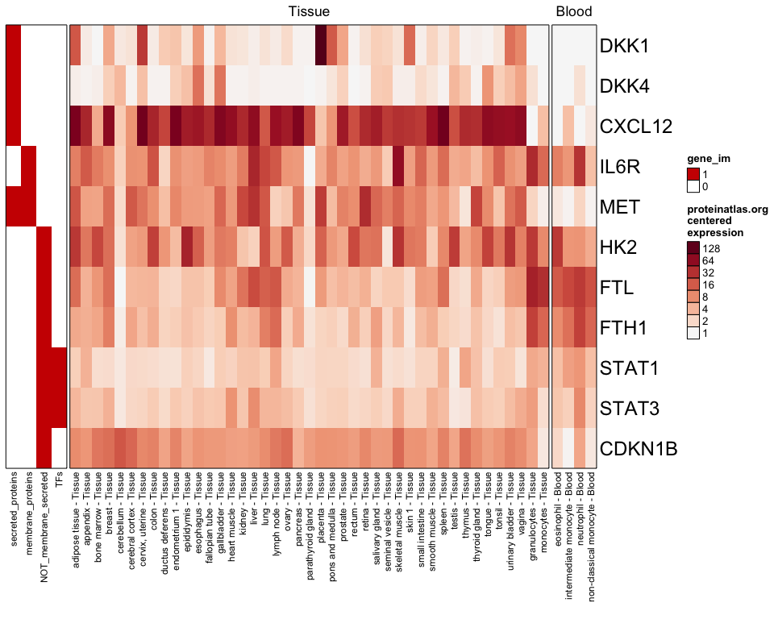

The goal of pajam is to provide data and visualizations from Protein Atlas, whose data is graciously provided by https://proteinatlas.org.
Installation
You can install pajam from GitHub with:
# install.packages("remotes")
remotes::install_github("jmw86069/pajam")Package Reference
Online documentation is available via pkgdown:
Full pajam function reference: https://jmw86069.github.io/pajam
Examples
Display protein tissue expression for a set of genes, displaying only "Tissue" sample types:
library(pajam)
test_genes <- c("DKK1","DKK4","CXCL12","IL6R","MET",
"HK2","FTL","FTH1","STAT1","STAT3","CDKN1B");
rowGroupMeans <- jamba::rowGroupMeans;
proteinatlas_heatmap(genes=test_genes,
type="Tissue",
centered=TRUE);
This package includes a few useful genesets that may provide useful context into the genes. The following example shows "Blood" sample types, and some added annotations.
# use proteinatlas_genesets_fdb11
use_im <- c("secreted_proteins",
"membrane_proteins",
"NOT_membrane_secreted",
"TFs");
proteinatlas_im <- list2im_opt(proteinatlas_genesets_fdb11[use_im]);
proteinatlas_heatmap(genes=test_genes,
type="Blood",
centered=TRUE,
gene_im=proteinatlas_im);You can filter samples to require a certain minimum expression:
proteinatlas_heatmap(genes=test_genes,
type=c("Tissue","Blood"),
centered=TRUE,
column_filter=16,
gene_im=proteinatlas_im);
It may be useful in finding cell line expression for a subset of genes:
proteinatlas_heatmap(genes=c("ACE2", "TMPRSS2", "FOXJ1", "HOPX", "SFTPC"),
type=c("Cell"),
centered=TRUE,
column_filter=4,
cluster_columns=TRUE,
gene_im=proteinatlas_im);
R-shiny app
You can start an R-shiny app that includes a heatmap that can be zoomed (thanks to the ComplexHeatmap package!):
## not run
#launch_pajam();
# Or define custom starting genes
selected_genes <- c("DKK1","DKK4","CXCL12","IL6R","MET",
"HK2","FTL","FTH1","STAT1","STAT3","CDKN1B");
#launch_pajam();